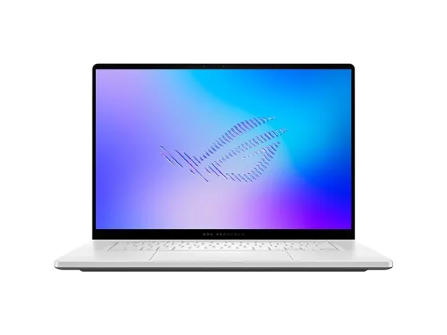
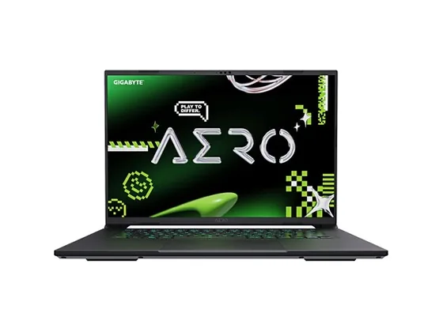

#1notre choixLe choix de la bande

Puce M5 · 16 Go · 1 To · mini-LED
Écran mini-LED parfaitement calibré, puce M5 polyvalente et connectique complète : la presse lui donne les meilleures notes de la catégorie.
9,3/107 notes presse
env. 2 200 €prix indicatif#2sur 10Le multimédia équilibré

15IPH11 · Core Ultra 7 · 32 Go · 15,3" 165 Hz
Un 15 pouces multimédia très bien noté pour son écran et son équilibre général, plus raisonnable que le Yoga Pro 9i.
8,8/102 notes presse · gamme
2 tests notés seulementenv. 2 170 €prix indicatif#3sur 10Le Mac grand écran

Puce M5 · 16 Go · 512 Go
Grand écran, silence total et puce M5 : parfait pour la photo et le montage léger, sans ventilateur ni encombrement.
8,8/105 notes presse · gamme
env. 1 700 €prix indicatif#4sur 10L'écran le plus abouti

16" OLED 120 Hz · Core Ultra · RTX
Un écran OLED tandem exceptionnel (jusqu'à 1 600 nits), de la puissance et une finition premium : le rival direct du MacBook Pro sous Windows.
8,6/108 notes presse
env. 2 450 €prix indicatif#5sur 10Le retour gagnant

Core Ultra X7 · 32 Go · OLED ou LCD
Nouveau châssis très réussi, superbe écran et excellente autonomie : l'ultraportable premium de l'année, vendu au prix fort.
8,5/1013 notes presse
env. 3 150 €prix indicatif#6sur 10Le double écran

UX8406 · deux écrans OLED 14" tactiles
Deux écrans OLED superposés et un clavier détachable : un gain de surface de travail unique pour le montage et la retouche en déplacement.
8,4/1027 notes presse
env. 1 990 €prix indicatif#7sur 10La station des créatifs

H7606 · Ryzen AI 9 · RTX · OLED 16" tactile
Écran OLED tactile calibré, molette DialPad et carte graphique RTX : une vraie station de création mobile, lourde sur le budget.
8,4/107 notes presse · gamme
env. 2 800 €prix indicatif#8sur 10Le concentré de puissance

HN7306 · Ryzen AI Max · OLED 13,3" tactile 360°
Un 13 pouces convertible qui embarque une puce Ryzen AI Max : des performances extrêmes dans un sac à main, avec une autonomie moyenne.
8,4/106 notes presse
env. 3 500 €prix indicatif#9sur 10Le plus puissant

GU606 · Core Ultra 9 · RTX · OLED 240 Hz
Très puissant dans un châssis fin en aluminium, avec un superbe écran OLED 240 Hz : le haut de gamme pour la vidéo, la 3D… et le jeu.
7,9/1012 notes presse · gamme
env. 3 400 €prix indicatif#10sur 10Le moins cher avec une RTX

Ryzen AI · RTX 5060 · 16" 165 Hz
Un 16 pouces fin avec carte RTX à prix contenu. Bon pour jouer et monter en 1080p, mais son écran ne conviendra pas aux créatifs exigeants.
6,6/105 notes presse
env. 1 780 €prix indicatif